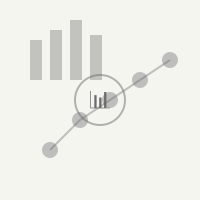
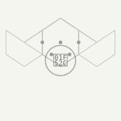

Data Sciences & Analytics
Advanced computational methods for pattern recognition, predictive modeling, and statistical analysis across large-scale datasets.
Research & Development Center
A dedicated institution advancing knowledge through systematic research, innovative methodologies, and collaborative scholarship. We bridge the gap between theoretical inquiry and practical application.
Explore ResearchOur multidisciplinary approach encompasses diverse fields of inquiry, fostering innovation through collaborative research initiatives

Advanced computational methods for pattern recognition, predictive modeling, and statistical analysis across large-scale datasets.

Integrative approaches to understanding complex biological systems through mathematical modeling and experimental validation.

Investigation of novel materials and their properties for applications in technology, medicine, and sustainable development.
Comprehensive research support and consultation services designed to advance scholarly inquiry and institutional development
Expert guidance on research methodology, project design, and strategic planning for academic and institutional initiatives.
Comprehensive editorial services, peer review coordination, and publication strategy development for scholarly works.
Specialized training workshops, seminars, and certification programs for researchers and academic professionals.
Facilitation of interdisciplinary partnerships and joint research initiatives across institutions and disciplines.
State-of-the-art facilities and resources for experimental research and prototype development.
Advanced statistical analysis, data visualization, and computational modeling services for research projects.
Comprehensive academic submission and review platform for verified researchers to submit, review, and manage scholarly works.
Access System →Our flagship interdisciplinary project examines the intersection of artificial intelligence and sustainable development. This comprehensive study involves collaboration with leading institutions worldwide, focusing on innovative solutions for environmental challenges through advanced computational methods.
Learn More →Latest research findings and scholarly contributions from our research teams
A comprehensive analysis of quantum algorithms and their potential applications in cryptography and optimization problems.
Innovative approaches to renewable energy integration and grid optimization for sustainable urban development.
Exploring the mechanisms of human cognition through interdisciplinary approaches combining neuroscience and psychology.